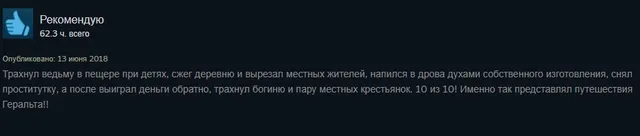
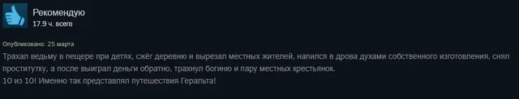

Вопрос дня
ВКонтакте
#ВопросДня@criticssteam The Witcher: Enhanced Edition
5 августа 2020 · №312 в выгрузке стены · оригинал во ВКонтакте ↗



#ВопросДня@criticssteam The Witcher: Enhanced Edition
✍🏻 Возвращаясь к теме одинаковых обзоров в Steam, предлагаем вам снова высказаться по данному вопросу.
В чем основная проблема людей - плагиаторов?
❗Хотим также напомнить, что у нашего сообщества есть беседа, где мы просто общаемя на свободные темы, а также именно туда сообщаются мелкие изменения группы, которым не посвящаются отдельные публикации, будем всем рады!
https://vk.me/join/AJQ1d963IhiDABy/iOW0yrwn
✍🏻 Возвращаясь к теме одинаковых обзоров в Steam, предлагаем вам снова высказаться по данному вопросу.
В чем основная проблема людей - плагиаторов?
❗Хотим также напомнить, что у нашего сообщества есть беседа, где мы просто общаемя на свободные темы, а также именно туда сообщаются мелкие изменения группы, которым не посвящаются отдельные публикации, будем всем рады!
https://vk.me/join/AJQ1d963IhiDABy/iOW0yrwn